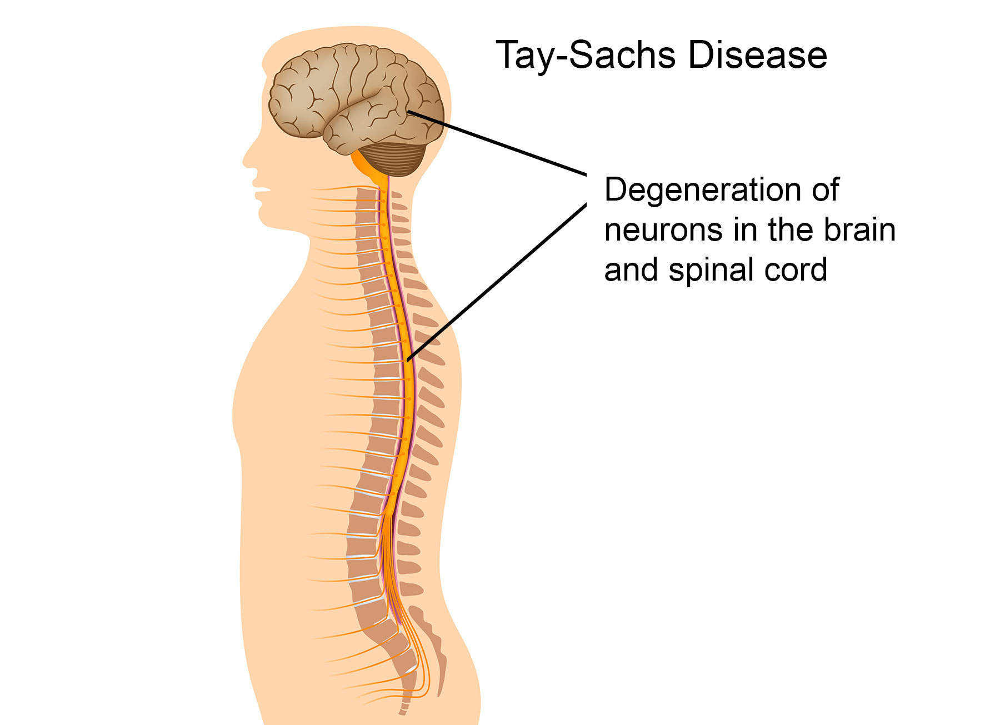

This program analyses DNA sequences to determine specific characteristics and maps of certain diseases our DNA test have recognition by the NCBI
Learning about your genetics enable you to optimize your health,making you aware of possibility of suffering from a genetically inherited disease or possibility of passing it to your off-springs. This knowledge is vital in bring up an aware family that understand how to optimize their health care and ensuring a healthy population.
GeneUs provides you the opportunity to get your genetic information and locally provided you can access your sequence .
This is an inexpensive means to analyze your DNA sequence and also offer you with knowledge on some of the most common genetic diseases,there symptoms and how to manage such problems. We also link you to specialist skilled and experienced in handling genetic defects.
We all know how genetic sequencing is very expensive, this has made it difficult for the society to get access to resources
The accessibility to technology is tedious especially for to a common citizen
Sickle cell anemia is an inherited form of anemia — a condition in which there aren't enough healthy red blood cells to carry adequate oxygen throughout your body.
Unexplained episodes of severe pain, such as pain in the abdomen, chest, bones or joints.
Swelling in the hands or feet.
Abdominal swelling, especially if the area is tender to the touch.
Fever. People with sickle cell anemia have an increased risk of infection, and fever can be the first sign of an infection.
Pale skin or nail beds.
Yellow tint to the skin or whites of the eyes
Yellow tint to the skin or whites of the eyesy.
Sickle cell anemia can lead to a host of complications, including:
If you carry the sickle cell trait, seeing a genetic counselor before trying to conceive can help you understand your risk of having a child with sickle cell anemia. He or she can also explain possible treatments, preventive measures and reproductive options.
Cystic fibrosis is a progressive, genetic disease that causes persistent lung infections and limits the ability to breathe over time.
In the lungs, the mucus clogs the airways and traps germs, like bacteria, leading to infections, inflammation, respiratory failure, and other complications. For this reason, minimizing contact with germs is a top concern for people with CF.
In the pancreas, the buildup of mucus prevents the release of digestive enzymes that help the body absorb food and key nutrients, resulting in malnutrition and poor growth. In the liver, the thick mucus can block the bile duct, causing liver disease. In men, CF can affect their ability to have children.
People with CF can have a variety of symptoms, including:
People with only one copy of the defective CF gene are called carriers, but they do not have the disease. Each time two CF carriers have a child, the chances are:
The defective CF gene contains a slight abnormality called a mutation.
There are more than 1,700 known mutations of the disease. Most genetic tests only screen for the most common CF mutations. Therefore, the test results may indicate a person who is a carrier of the CF gene is not a carrier.
To couple at risk of giving birth to a child with the the disease;
Diagnosing cystic fibrosis is done through a newborn screening, a sweat test, a genetic or carrier test, and a clinical evaluation
Healthy babies develop vision, movement, hearing, and other vital functions in part because enzymes clear out fatty protein and other unwanted material that can interfere with growth. But a baby with Tay-Sachs disease is born without one of those important enzymes, hexosaminidase A (HEXA). So, as those fatty proteins build up in the brain, they hurt the baby's sight, hearing, movement, and mental development. A child can only get Tay-Sachs by inheriting the gene for it from both parents. Tay-Sachs can be detected before birth, so couples who are thinking of having children may want to get a blood test to find out whether their child would be likely to have it.
In rare forms of the disease;
Those problems may not appear until the child is 2 to 5 years old. The disease progresses more slowly, but death usually occurs by the time the child is 15 years old.
In another, milder form of Tay-Sachs (called late-onset Tay-Sachs), the disease causes muscle weakness and slurred speech, but sight, hearing, and mental capabilities remain intact.
There is no cure for any form of Tay-Sachs disease. But doctors may be able to help a child cope with its symptoms by prescribing medicines to relieve pain, manage seizures, and control muscle spasticity.
If your child has been diagnosed with Tay-Sachs or both you and your partner are carriers of the gene, talk to your doctor or a genetic counselor about ongoing research. You also might seek support from a group such as the National Tay-Sachs and Allied Diseases Foundation or the March of Dimes Foundation.
We are aware of the importance of your genetic data, and we do not take any chances when it comes to protecting it. We don't want your information to be exposed, and not having it online seems to us to be the maximum level of security we can implement.